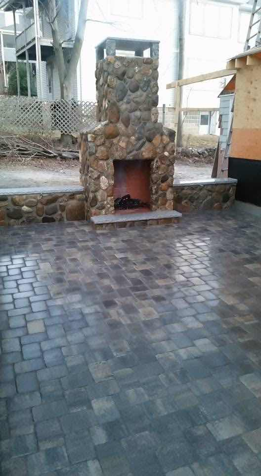

How We Built It
A fieldstone fireplace and patio, in six panels.
Eleven feet, four inches.
Measured twice.
Once more.
THWACK!Four feet down. Frost doesn't negotiate.
This wheelbarrow has opinions.
SPLORCHA little to the left.
That's a forty-pound "little."
THUNKCap's coming down. Nobody stand there.
Bubble's centered. So am I.
CLINKStraight lines. Always.
Do not walk on my joints.
THUD
Worth every stone.
Who's got the marshmallows?
Want something like this in your yard? Get in touch.